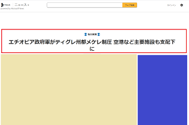

見出しh1のフォントサイズは何pxがよいのか？
最近のニュースメディアはフォントサイズが大きくなってきていますが、特に海外メディアでその傾向が強いと感じています。
デスクトップPCにて、海外主要メディアのh1タグのfont-sizeをチェックしてみると、おおむね40px～60pxで設定されているようです。
■海外メディア
Bloomberg：59.7px
ワシントンポスト：56px
ハフポスト：52px
BBC：44px
CNN：40.5px
ロイター：35px
Avg.：47.86px
40px以上となると横幅が広くなるため、サイドバーが見出しタグの下にもぐりこむ形のレイアウトが多くなってきています。
一方、日本メディアの場合、24px～32pxで設定されていることが多いです。
■日本メディア
読売新聞：32px
NHK：32px
西日本新聞：32px
産経新聞：28px
毎日新聞：26px
東京新聞：24px
朝日新聞：24px
日経：24px
ヤフーニュース：22px
msnニュース：36px
Avg.：28px
これまで、自サイトでは見出しタグを「22px～24px」あたりで設定していたのですが、最近のh1巨大化の傾向を考えますと、ワンランク上の「26px～28px」を採用する時期に来ているのかもしれません。
公官庁も調べてみましたが、50px近いホームページもあるようです。
■官庁
首相官邸：48px
厚生労働省：36px
経産省：25px
日本で大きめのフォントサイズを採用しているのが首相官邸やmsnニュースかと思いますが、サイドバーが見出しの下にもぐり込む形になっています。

日本でもこのスタイルが普及するのかは不明ですが、今後の様子を見て、もし普及するようなら自サイトでも取り入れていこうと考えてます。
このh1フォントサイズが大きくなってきている原因は不明ですが、もしかすると最近はバナーの広告サイズが巨大化しているため、それにあわせてフォントサイズも大きくなってきているのかもしれません。
いずれにしても、20px前後で設定している場合は「26px～28px」あたりまで大きくした方が良いかと思います。